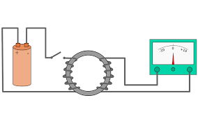

“La tensión inducida en un circuito cerrado es directamente proporcional a la razón de cambio en el tiempo del flujo magnético que atraviesa una superficie cualquiera con el circuito mismo como borde”.
Para entender esto cabalmente, hará falta revisar el experimento de Faraday: una batería aportaba corriente a una bobina pequeña, creando un campo magnético a través de las espiras de la bobina (cables metálicos enrollados sobre su propio eje). Cuando esta bobina se movía dentro y fuera de una más grande, su campo magnético (cambiante en el tiempo por el movimiento) generaba un voltaje en la bobina grande que podía medirse con un galvanómetro.
La ley de Faraday usualmente se expresa mediante la siguiente fórmula:
Prácticamente toda la tecnología eléctrica se basa en la ley de Faraday, especialmente lo referido a generadores, transformadores y motores eléctricos.
Por ejemplo, el motor de corriente continua se basó en el aprovechamiento de un disco de cobre que rotaba entre los extremos de un imán, generando una corriente continua.
De este principio aparentemente simple se desprende la invención de cosas tan complejas como un transformador, un generador de corriente alterna, un freno magnético o una cocina eléctrica.
